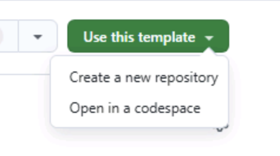
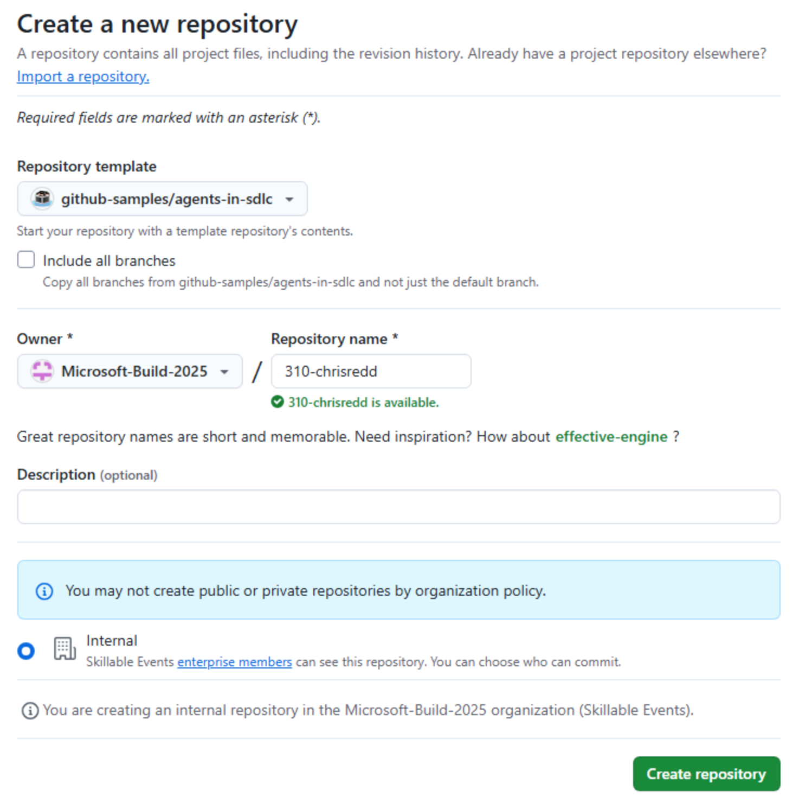
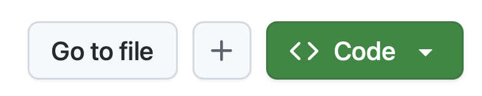
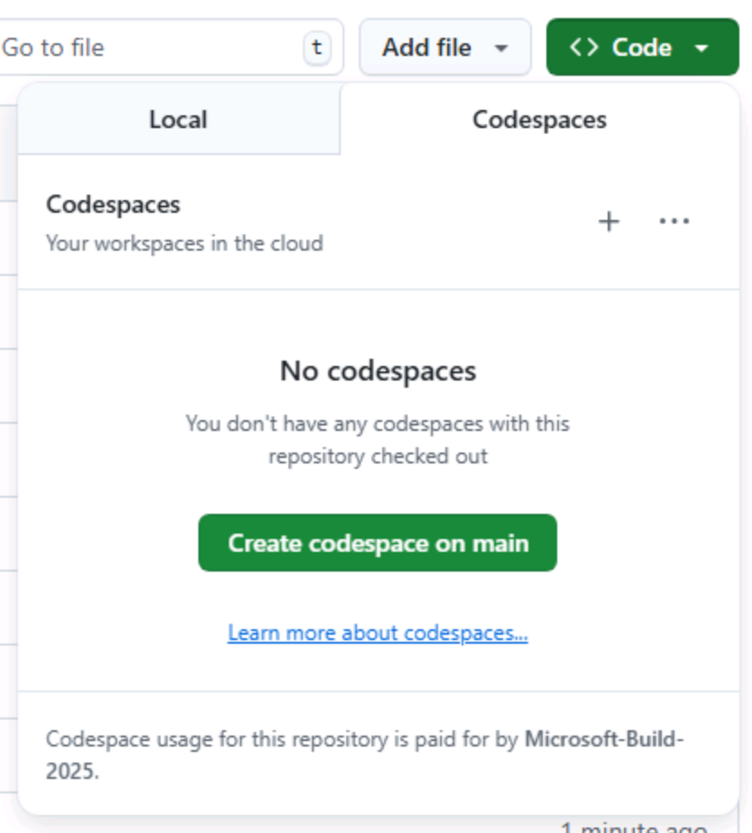

Copilot CLI の演習を始める前に、必要な準備を整えます。Tailspin Toys リポジトリの自分用コピーを作成し、codespace を立ち上げます。次の演習では、その統合ターミナルを使って Copilot CLI をインストールし、実行します。
ラボ用リポジトリを設定する
これから作成するコード用にリポジトリのコピーを作成するため、template からインスタンスを作成します。新しいインスタンスにはラボに必要なすべてのファイルが含まれており、演習を進める間はこのリポジトリを使用します。
- 新しいブラウザー ウィンドウで、このラボの GitHub リポジトリ
https://github.com/github-samples/tailspin-toysに移動します。 -
ラボ用リポジトリ ページの Use this template ボタンを選択して、自分用のリポジトリ コピーを作成します。次に Create a new repository を選択します。

-
GitHub または Microsoft が主催するイベントの一環としてこのワークショップを進めている場合は、メンターから案内された手順に従ってください。そうでない場合は、GitHub Copilot にアクセスできる organization に新しいリポジトリを作成できます。

-
後でラボ内で参照するため、作成したリポジトリ パス（organization-or-user-name/repository-name）を控えておいてください。
補足 バックログの準備は完了しています
テンプレートからリポジトリを作成すると、GitHub issue のバックログが自動的に作成されます。ワークショップ全体を通してこれらの issue を使って作業するため、自分で起票する必要はありません。
Codespace を作成する
次は、codespace を使ってラボの演習を進めます。
GitHub Codespaces はクラウドベースの開発環境であり、ブラウザーから直接コードの作成、実行、デバッグを行えます。複数のプログラミング言語、拡張機能、ツールに対応したフル機能の IDE を提供します。
- 新しく作成したリポジトリに移動します。
-
緑色の Code ボタンを選択します。

-
Codespaces タブを選択し、Create codespace on main（または +）を選択して新しい codespace を作成します。既存の Codespace がある場合は、その名前を選んで再開できます。

Codespace の作成には数分かかりますが、すべてのサービスを手動でインストールするよりははるかに速く完了します。その間に、次に扱う GitHub Copilot のほかの機能を確認しておくこともできます。
注意 後続の演習で codespace に戻ります。いまのところは、ブラウザーのタブで開いたままにしておいてください。
補足 このワークショップは、codespace またはローカルの dev container 内で実行する前提で作られています。どちらでも、必要な前提条件がすべてインストールされた環境を用意できるため、スムーズに進められます。ローカルで実行したい場合は、クローンしたリポジトリを VS Code で開き、表示されたら Reopen in Container を選択してください。VS Code が、codespace と同じ dev container を構築します。
まとめ
おめでとうございます。ラボ用リポジトリのコピーを作成できました。さらに、Copilot CLI を使い始めるときに使用する codespace の作成も開始しました。
次のステップ
Copilot CLI をインストールし、GitHub アカウントで認証しましょう。演習 1 - GitHub Copilot CLI のインストール に進みます。